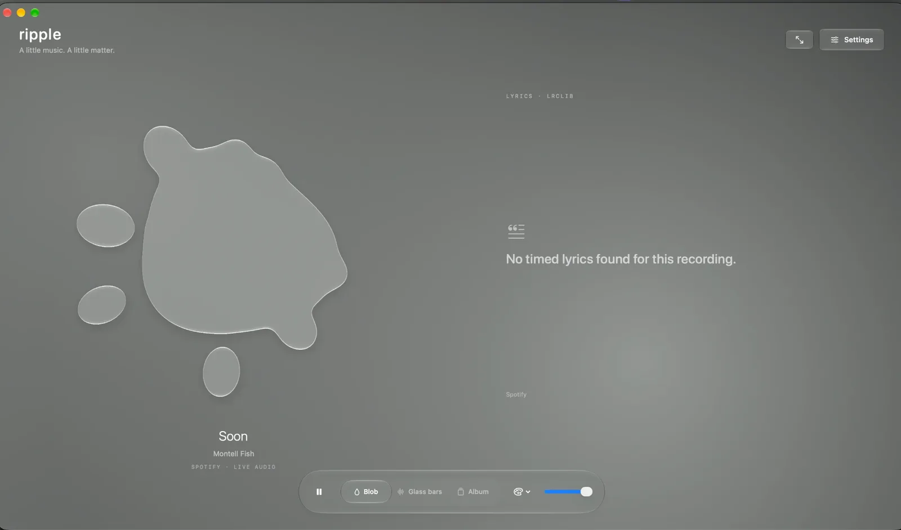
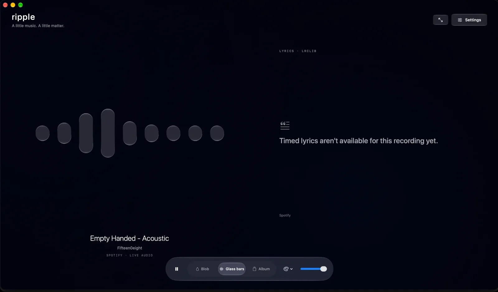
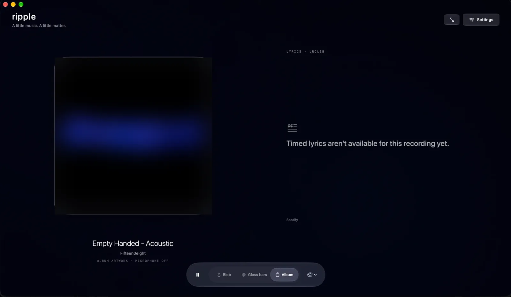

Blob
Liquid that listens
A soft glass shape that swells with the bass and throws off droplets on the beat.
For macOS · Apple Silicon
Ripple turns your Mac's desktop into Liquid Glass that moves with your music.
7-day free trial · no card needed

Three moods
Switch modes any time from the glass control bar. Ripple follows whatever's playing.
Blob
A soft glass shape that swells with the bass and throws off droplets on the beat.

Glass bars
Nine rounded bars, from deep bass to bright highs, moving in real time.

Album
Your song's artwork in a glass frame, with lyrics alongside. No audio capture needed.
Made for the Mac
Lines appear in time with the song, when timed lyrics are available for it.
Ripple reads what's playing in the desktop app, with artwork, lyrics and playback controls.
Run Ripple on one display or all of them, and let it rest when the music stops.
Ripple analyses your music app's sound locally to animate the glass. Nothing is recorded or uploaded.
Pricing
No card needed to start. Then choose monthly or yearly.
Prices include VAT where applicable. Payments are handled by Lemon Squeezy, our reseller. See the terms and refund policy.
Questions
A Mac with Apple Silicon (M1 or later) running macOS 26 or later, and the Spotify or Apple Music desktop app.
No. Ripple analyses the sound of your music app on your Mac, in real time, to animate the glass. It never records, saves or uploads audio, and it doesn't use your microphone. macOS will ask you to allow audio capture the first time. Privacy details.
Start the 7-day trial inside the app. No card or account is needed, and nothing is charged when it ends. To keep using Ripple afterwards, choose a monthly or yearly subscription.
Cancel anytime from the link in your purchase email or from Ripple's settings (Manage subscription). You keep access until the end of the period you've paid for.
Yes. If Ripple isn't for you, ask within 14 days of a payment. See the refund policy.